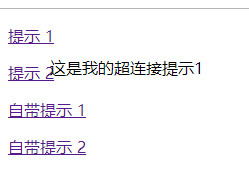
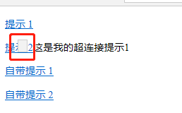

在熟悉jQuery过程中，练习超链接提示显示，发现书本上有个问题，经过查询资料，修改如下：
1 <!DOCTYPE html>
2 <html>
3 <head>
4 <title>超连接提示</title>
5 <meta charset="utf-8">
6 <script type="text/javascript" src="jquery-3.4.1.js"></script>
7 <script type="text/javascript">
8 $(function(){
9 var x=10,y=20;
10 $("a.tooltip").mouseover(function(e){
11 this.myTitle=this.title;
12 this.title="";
13 //创建div元素
14 var $tooltip=$("<div id='tooltip'>"+this.myTitle+"</div>");
15 $("body").append($tooltip);
16 $("#tooltip")
17 .css({
18 "position":"absolute",//这一行必须添加，否则显示错误。添加之后，IE edge会同时显示空的原提示框，chrome显示正常
19 "top":(e.pageY+y)+"px",
20 "left":(e.pageX+x)+"px"
21 }).show("fast");
22 })
23 .mouseout(function(){
24 this.title=this.myTitle;
25 $("#tooltip").remove();
26 }).mousemove(function(e){
27 $("#tooltip")
28 .css({
29 "top":(e.pageY+y)+"px",
30 "left":(e.pageX+x)+"px"
31 });
32 });
33 })
34 </script>
35 </head>
36 <body>
37 <p><a href="#" class="tooltip" title="这是我的超连接提示1">提示 1</a></p>
38 <p><a href="#" class="tooltip" title="这是我的超连接提示2">提示 2</a></p>
39 <p><a href="#" title="这是自带提示1">自带提示 1</a></p>
40 <p><a href="#" title="这是自带提示2">自带提示 2</a></p>
41 </body>
42 </html>效果如下图：

IE edge中的效果：
